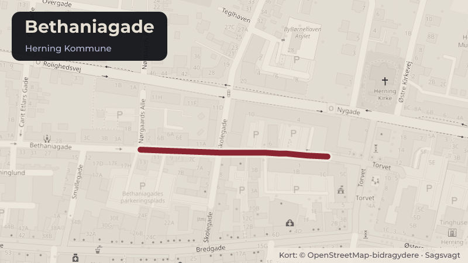

Besluttet 22. september, Beskæftigelsesudvalget, Herning
Orientering om den aktuelle situation i og omkring Bethaniagade
Den seneste tids hændelser i og omkring Bethaniagade og Markedspladsen har skabt bekymring blandt nogle borgere og aktører i området og giver anledning til en orientering om situationen og de indsatser, der iværksættes.
Steder i sagen: Bethaniagade

Kort fortalt
- Hvem
- Beskæftigelsesudvalget, Herning Kommune
- Hvornår
- Tirsdag 22. september 2026
- Status
- Besluttet. Orienteringen er taget til efterretning.
Læs hele sagen Kommunens egen tekst
Sagsfremstilling
Beskæftigelsesudvalget orienteres om den aktuelle situation i og omkring Bethaniagade samt
om de handlemuligheder der arbejdes med for at imødekomme situationen.
Der har over de seneste uger været flere alvorlige hændelser i området, herunder flere
knivoverfald, hvoraf ét havde dødelig udgang. Hændelserne har nødvendiggjort politiets
indsats og har skabt bekymring blandt nogle borgere og aktører i området.
Herning Kommunes opsøgende gadeplansteam og politiet vurderer, at hændelserne
umiddelbart fremstår som enkeltstående begivenheder og ikke som led i en samlet konflikt eller
organiseret aktivitet. Samtidig peges der på, at aktivitetsniveauet i området traditionelt er
højere i sommermånederne, hvor flere opholder sig udendørs, og at aktivitetsniveauet
sædvanligvis aftager i efterårs- og vinterperioden.
Herning Kommune arbejder løbende med at understøtte både trygheden i lokalområdet og
indsatsen for samfundets mest udsatte borgere. Varmestuen i Bethaniagade har gennem
mange år haft en central funktion for udsatte borgere og er den eneste døgnåbne varmestue i
Midt- og Vestjylland. Samtidig er Herning Kommune den kommune i regionen med den største
andel af herbergspladser. Det medfører en tilstrømning af borgere fra andre kommuner,
ligesom miljøet påvirkes af borgere fra blandt andet Udrejsecenter Kærshovedgård.
Kommunens opsøgende gadeplansteam arbejder målrettet med tidlig opsporing,
relationsarbejde og forebyggelse af konflikter blandt borgere i udsatte- og misbrugsmiljøet.
Indsatsen styrkes i den kommende periode gennem bl.a. en opnormering af gadeplansarbejdet
med afsæt i puljemidler. Herudover arbejder kommunen med en styrket Housing First-indsats i
samarbejde med Den Sociale Investeringsfond med henblik på at forebygge og reducere
hjemløshed.
Der er etableret et tæt samarbejde mellem Herning Kommune, Midt- og Vestjyllands Politi og
Blå Kors Varmestue omkring udviklingen i området. Herudover styrkes samarbejdet med
politiet, Psykiatrien og Udrejsecenter Kærshovedgård med henblik på tidligere identifikation af
bekymrende udviklinger og en mere koordineret indsats omkring borgere med komplekse
problemstillinger. Som led heri etableres en tværgående kommunal taskforce, der skal sikre
koordination, videndeling og hurtig opfølgning i konkrete sager.
Med udgangspunkt i det netop indgåede budgetforlig og med henblik på at skabe et bedre
grundlag for eventuelle fremtidige beslutninger igangsætter administrationen en analyse af de
forhold, der påvirker udviklingen i og omkring udsatte- og misbrugsmiljøet i Herning. Analysen
skal blandt andet belyse, hvilke borgergrupper der opholder sig i området og bidrager til uro og
utryghed, hvilken betydning den døgnåbne varmestue og tilstrømningen fra andre kommuner
har, samt hvilke strukturelle forhold der påvirker omfanget af hjemløshed og udsathed i Herning
Kommune.
Analysen skal understøtte en vurdering af, hvilke indsatser der mest effektivt kan bidrage til
både øget tryghed i lokalområdet og en socialt ansvarlig indsats over for målgruppen.
Indstilling
DIREKTØREN FOR SOCIAL, SUNDHED OG BESKÆFTIGELSE INDSTILLER
at Beskæftigelsesudvalget tager orienteringen til efterretning.
Beslutning
Orienteringen er taget til efterretning.
Kilde: Herning Kommune, Beskæftigelsesudvalget, referat fra mødet tirsdag 22. september 2026, punkt 7. Læs den originale sag hos kommunen.